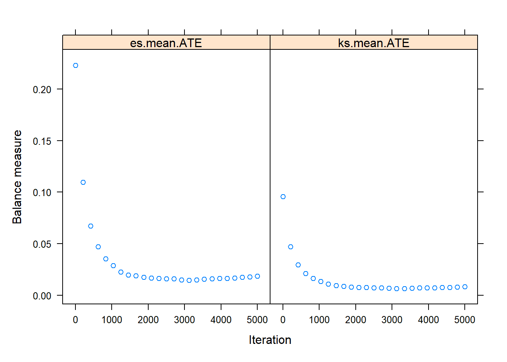
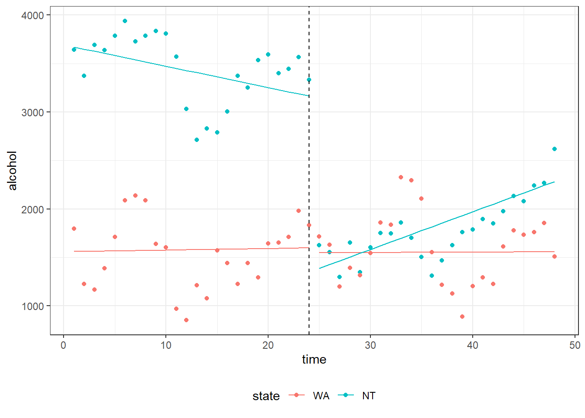

While Randomized Controlled Trials (RCTs) are the gold standard for causal inference, they are often not feasible in addiction research for ethical and logistic reasons; for example, when studying the impact of smoking on cancer.
Instead, observational data from real-world settings are increasingly being used to inform clinical decisions and public health policies. This paper presents the framework for potential outcomes for causal inference and summarizes best practices in causal analysis for observational data. Among them: Matching, Inverse Probability Weighting (IPW), and Interrupted Time-Series Analysis (ITSA).
These methods will be explained using examples from addiction research, and the resulting results will be compared.
Rows: 8000 Columns: 10
── Column specification ────────────────────────────────────────────────────────
Delimiter: ","
dbl (10): sex, indigeneity, high_school, partnered, remoteness, language, sm...
ℹ Use `spec()` to retrieve the full column specification for this data.
ℹ Specify the column types or set `show_col_types = FALSE` to quiet this message.
It contains the following variables:
Sex: 0: Female; 1: Male Indigeneity: 0: non-indigenous; 1: indigenous High_school: 0: not completed high school; 1: completed high school Partnered: 0: not partnered; 1: partnered Remoteness: Remoteness of an individual’s residence, (“factor” variable). 0: major cities; 1: inner regional; 2: outer regional or more remote area Language: Main language of the participant. 0: non-English; 1: English Smoker: 0: No; 1: Yes Risky_alcohol: Consuming alcohol at a risky level. 0: No; 1: Yes Psyc_distress: Numeric variable ranged from 10 to 50. Higher value represents higher level of psychological distress Age: Age of the participant
Method 1: Matching
The goal of matching is to establish the balance between treatment and control group, as it generally is in RTCs. Specificly, it targets similar distributions of all observed covariates in both treatment and control group. A variant of matching is one-to-one matching which matches each individual in the treatment group with an individual in the control group based on a propensity score. This score represents the probability of receiving the treatment, measured by all variables that can influence it. It is often estimated using logistic regression with pretreatment covariates. Unmatched individuals will be excluded. After matching, the Average Treatment effect among the Treated (ATT) can now be calculated using simple regression.
The following example illustrates estimating the causal effect of smoking on psychological distress:
Primarily, all smokers need to be matched to a non-smoker from the control group.
Code
smk_matching <-matchit(smoker ~ sex + indigeneity + high_school + partnered + remoteness + language + risky_alcohol + age, data = smk_data, method ="optimal", distance ="glm")summary(smk_matching)
Call:
matchit(formula = smoker ~ sex + indigeneity + high_school +
partnered + remoteness + language + risky_alcohol + age,
data = smk_data, method = "optimal", distance = "glm")
Summary of Balance for All Data:
Means Treated Means Control Std. Mean Diff. Var. Ratio eCDF Mean
distance 0.1852 0.1130 0.6304 2.0778 0.2033
sex 0.4938 0.4421 0.1035 . 0.0518
indigeneity 0.0524 0.0175 0.1565 . 0.0349
high_school 0.4220 0.6378 -0.4370 . 0.2158
partnered 0.4630 0.6913 -0.4578 . 0.2283
remoteness0 0.5852 0.6773 -0.1870 . 0.0921
remoteness1 0.2177 0.1900 0.0670 . 0.0277
remoteness2 0.1971 0.1327 0.1621 . 0.0645
language 0.9579 0.9130 0.2234 . 0.0449
risky_alcohol 0.6427 0.5411 0.2120 . 0.1016
age 51.6057 53.7824 -0.1676 0.8214 0.0441
eCDF Max
distance 0.3185
sex 0.0518
indigeneity 0.0349
high_school 0.2158
partnered 0.2283
remoteness0 0.0921
remoteness1 0.0277
remoteness2 0.0645
language 0.0449
risky_alcohol 0.1016
age 0.1020
Summary of Balance for Matched Data:
Means Treated Means Control Std. Mean Diff. Var. Ratio eCDF Mean
distance 0.1852 0.1849 0.0025 1.0151 0.0002
sex 0.4938 0.5000 -0.0123 . 0.0062
indigeneity 0.0524 0.0400 0.0553 . 0.0123
high_school 0.4220 0.4127 0.0187 . 0.0092
partnered 0.4630 0.4743 -0.0226 . 0.0113
remoteness0 0.5852 0.6027 -0.0354 . 0.0175
remoteness1 0.2177 0.2136 0.0100 . 0.0041
remoteness2 0.1971 0.1838 0.0335 . 0.0133
language 0.9579 0.9620 -0.0205 . 0.0041
risky_alcohol 0.6427 0.6417 0.0021 . 0.0010
age 51.6057 51.2064 0.0307 0.9137 0.0153
eCDF Max Std. Pair Dist.
distance 0.0072 0.0044
sex 0.0062 0.2752
indigeneity 0.0123 0.3042
high_school 0.0092 0.1725
partnered 0.0113 0.1833
remoteness0 0.0175 0.2772
remoteness1 0.0041 0.2389
remoteness2 0.0133 0.3226
language 0.0041 0.1329
risky_alcohol 0.0010 0.2678
age 0.0390 0.3493
Sample Sizes:
Control Treated
All 7026 974
Matched 974 974
Unmatched 6052 0
Discarded 0 0
To highlight the difference in the matched and unmatched data set concerning the adjustment of all social demographic variables:
Code
plot(summary(smk_matching), abs=FALSE)
To estimate the the treatment effect of smoking on social distress a linear regression is used:
Inverse Probability Weighting (IPW) is a statistical technique used in observational studies to estimate the causal effect of a treatment or intervention. Its primary objective is to address potential confounding variables and (like the matching method) achieve balance between the treatment and control groups. In IPW, propensity scores are calculated for each individual in the study population. These scores represent the probability of receiving the treatment, given a set of observed covariates, like in this case religion or education. Once the propensity scores are obtained, weights are assigned to each individual based on their propensity score. Individuals in the treatment group are assigned weights that are the inverse of their propensity score, while individuals in the control group are assigned weights derived from the inverse of one minus the propensity score. These weights help balance the groups by giving more weight to individuals who are less likely to receive the treatment, and vice versa. The weighted data is then used to estimate the causal effect of the treatment using appropriate statistical methods such as regression models or stratification techniques.
Balance the groups:
Code
#Here starts the part for IPTW method. The same data is being used, with remoteness variable recoded as factor variable.smk_iptw <-ps(smoker ~ sex + indigeneity + high_school + partnered + remoteness + language + risky_alcohol + age, interaction.depth =3, data =as.data.frame(smk_data), n.tree =5000, estimand ="ATE", verbose =FALSE)bal.table(smk_iptw)
The ps()-function is being used to estimate the propensity scores. The variable smoker is the outcome variable, and the other variables listed are the predictors used to predict the likelihood of being a smoker (Receiving the Treatment). The result is stored in the smk_iptw object, which can then be further used for estimating the causal effect of the treatment on smoking behavior.
The command “bal.table(smk_iptw)” calculates a balance table for the variables in relation to the created propensity score model “smk_iptw”. In this case, the focus is on the first and third table and on the column “std. eff. sz”. In the first table, there are substantial differences in all variables in the original data between the two groups (> 0.1). Compared to that, in the third table, which represents the weighted data, the differences are close to 0. So a much better balance between the groups regarding the covariates is achieved.
Code
plot(smk_iptw)

Extract the weights:
Code
#extract the weightssmk_data$weight <-get.weights(smk_iptw, stop.method ="es.mean")
With the previous step, the weights can now be extracted. The get.weights()-function is used to calculate the weights for the observations based on the propensity score analysis. The relevant object was defined above as smk_iptw. This object contains the necessary information to compute the weights. By executing this code, the propensity score weights are calculated for each observation in the “smk_data” dataset and stored in the newly created “weight” variable.
Estimate the Treatment Effect:
Code
#Estimate the Treatment Effectdesign_iptw <-svydesign(ids =~1, weights =~weight, data = smk_data)smk_model3 <-svyglm(psyc_distress ~ smoker, design = design_iptw)summary(smk_model3)
Call:
svyglm(formula = psyc_distress ~ smoker, design = design_iptw)
Survey design:
svydesign(ids = ~1, weights = ~weight, data = smk_data)
Coefficients:
Estimate Std. Error t value Pr(>|t|)
(Intercept) 14.83600 0.06618 224.168 < 2e-16 ***
smoker 1.72865 0.25771 6.708 2.11e-11 ***
---
Signif. codes: 0 '***' 0.001 '**' 0.01 '*' 0.05 '.' 0.1 ' ' 1
(Dispersion parameter for gaussian family taken to be 38.62049)
Number of Fisher Scoring iterations: 2
After using IPTW, the treatment effect can now be estimated. The function svyglm() estimates a generalized linear model (glm) for psychological distress (psyc_distress) based on the variable smoker. The model is fitted using the previously created survey design design_iptw with inverse probability weighting. The results of the model are assigned to the variable smk_model3. The following summary ()-function provides the results from the smk_model3. It includes statistical information such as estimates, standard errors, p-values, and confidence intervals for the estimated model coefficients. By running these code snippets, estimates, summaries, and confidence intervals are computed for the relationship between smoking and psychological distress. The results can be used to analyze the impact of smoking on mental health and draw conclusions. By using Inverse Probability Weighting before, we got a much better estimate for the causal relationship between smoking and psychological distress by migate the impact of the confounding variables and create balance between treatment and control group.
In this case, the analysis estimates that smoking leads to an increase of 1.73 points in psychological distress compared to non-smokers.
With the goal of altering a population-level outcome, numerous public health interventions are put into action, such as the rate of hospital emergency presentations due to excessive alcohol consumption. Interrupted Time Series Analysis, a statistical technique using observational data, examines the impact of interventions by analyzing changes in a time series before and after the intervention. It separates intervention effects from other factors, employing a control group for a counterfactual scenario. This method has broad applications in public health, economics, social sciences, and policy evaluation. It enables decision-makers to make informed choices and optimize policies. Interrupted Time Series Analysis is a powerful tool for understanding causal effects, evaluating interventions, and improving well-being.
In this part, the effect of the minimum alcohol pricing on alcohol consumption at the population level is estimated in Northern Territory, Australia, on the basis of the following (observational) data set:
Code
#load the datasetalc_mup_data <-read_csv("https://statsnotebook.io/blog/data_management/example_data/alcohol_data_NTWA.csv")
The dataset contains 5 variables, as follows:
Alcohol: measure of population level alcohol consumption in a month. Time: time measures in months State: “NT”: Northern Territory; “WA” Western Australia Intervention: Whether the time point is pre or post intervention. 0: Pre-intervention; 1: Post-intervention. Season: Season of the year. 1: Spring; 2: Summer; 3: Autumn; 4: Winter
# A tibble: 4 × 7
# Groups: state [2]
state intervention count M_alcohol Mdn_alcohol SD_alcohol IQR_alcohol
<fct> <fct> <int> <dbl> <dbl> <dbl> <dbl>
1 WA 0 24 1531. 1587. 358. 506.
2 WA 1 24 1582. 1583. 367. 517.
3 NT 0 24 3444. 3548. 349. 388.
4 NT 1 24 1777. 1748. 323. 324.
To visualize alcohol consumption level by state and by pre/post intervention the ggplot() function is being used:
Code
ggplot(alc_mup_data) +geom_boxplot(aes(y=alcohol, x=state, fill = intervention))
Estimating the intervention effect of alcohol minimum pricing on population level alcohol consumption, using gls() function:
Code
res <-gls(alcohol ~ time*intervention*state,data = alc_mup_data,correlation =corARMA(p =1, form =~ time | state), method ="ML")summary(res)
Generalized least squares fit by maximum likelihood
Model: alcohol ~ time * intervention * state
Data: alc_mup_data
AIC BIC logLik
1330.261 1355.905 -655.1307
Correlation Structure: AR(1)
Formula: ~time | state
Parameter estimate(s):
Phi
0.7066424
Coefficients:
Value Std.Error t-value p-value
(Intercept) 1558.506 263.2032 5.921303 0.0000
time 1.636 16.9157 0.096720 0.9232
intervention1 -20.840 715.1188 -0.029143 0.9768
stateNT 2133.915 372.2256 5.732854 0.0000
time:intervention1 -1.221 27.5750 -0.044281 0.9648
time:stateNT -23.652 23.9224 -0.988718 0.3255
intervention1:stateNT -3258.232 1011.3307 -3.221728 0.0018
time:intervention1:stateNT 62.170 38.9969 1.594227 0.1145
Correlation:
(Intr) time intrv1 statNT tm:nt1 tm:sNT in1:NT
time -0.840
intervention1 -0.507 0.639
stateNT -0.707 0.594 0.358
time:intervention1 0.600 -0.815 -0.945 -0.424
time:stateNT 0.594 -0.707 -0.452 -0.840 0.576
intervention1:stateNT 0.358 -0.452 -0.707 -0.507 0.668 0.639
time:intervention1:stateNT -0.424 0.576 0.668 0.600 -0.707 -0.815 -0.945
Standardized residuals:
Min Q1 Med Q3 Max
-2.3167349 -0.8427548 0.0837754 0.6497867 2.4752763
Residual standard error: 312.3269
Degrees of freedom: 96 total; 88 residual
Code
#generating the model-based predictionalc_mup_data$predicted <- res$fitted#generating the interaction for ggplotsgroups =interaction(alc_mup_data$intervention,alc_mup_data$state)#ploting the time seriesplot <-ggplot() +geom_point(data = alc_mup_data, aes(y = alcohol, x = time, color = state)) +geom_line(data = alc_mup_data, aes(y = predicted, x = time, color = state, group = groups)) +geom_vline(xintercept =max((alc_mup_data %>%filter(intervention =="0"))$time), linetype ="dashed") +theme_bw(base_family ="sans") +theme(legend.position ="bottom")plot

While alcohol consumption in the Northern Territory was higher than in Western Australia before alcohol minimum pricing, there was no significant difference in the pre-intervention trend (as indicated by the time by state interaction). Immediately after implementing minimum alcohol price, there was a significant drop in alcohol consumption in the Northern Territory but not in Western Australia (as indicated by the intervention by state interaction).
Code
alc_mup_data$residuals <-residuals(res)
To adjust for seasonality, harmonic function is being used based on sine and cosine function:
alc_mup_data$predicted <- res$fittedgroups =interaction(alc_mup_data$intervention,alc_mup_data$state)alc_mup_data.linear <- alc_mup_dataalc_mup_data.linear$harmonic1 <-0alc_mup_data.linear$harmonic2 <-0alc_mup_data.linear$predicted <-predict(res, alc_mup_data.linear)plot <-ggplot() +geom_point(data = alc_mup_data, aes(y = alcohol, x = time, color = state)) +geom_line(data = alc_mup_data, aes(y = predicted, x = time, color = state, group = groups), linetype ="dashed") +geom_line(data = alc_mup_data.linear, aes(y = predicted, x = time, color = state, group = groups)) +geom_vline(xintercept =max((alc_mup_data %>%filter(intervention =="0"))$time), linetype ="dashed") +theme_bw(base_family ="sans") +theme(legend.position ="bottom")plot
Results & Interpretation
In conclusion, we have explored three powerful methods in causal inference which are part of the case study “Causal inference with observational data in addiction research”: Matching, Inverse Probability Treatment Weighting (IPTW), and Time Series Analysis. Each of these methods offers unique approaches to address causal questions in observational data. To explain Matching and IPTW the used study investigates the causal effect of smoking on psychological distress.
We saw, that matching is a valuable technique that aims to create comparable treatment and control groups by pairing observations based on their similarity in propensity scores. IPTW assigning weights to observations based on their propensity scores, effectively balancing treatment and control groups. So these two methods have the same goal by creating balance between treatment and control group und thereafter on that base estimating the Average Treatment Effect.
Time Series Analysis, on the other hand, allows us to explore the dynamics and relationships among variables over time. It provides insights into the causal effects of interventions or treatments by examining how changes in one variable influence another variable in a time-dependent manner.
In summary, by employing Inverse Probability Weighting, Matching, and Time Series Analysis, researchers can enhance their ability to understand and estimate causal effects in diverse settings, contributing to evidence-based decision-making and advancing our understanding of complex phenomena.
Source Code
---title: "DCL Real Data Example: Addiction Research"authors: "Mattes Grundmann, Oya Bazer, Jakob Zschocke"date: "2023-07-04"format: html: code-fold: true code-tools: true---### Introduction:While Randomized Controlled Trials (RCTs) are the gold standard for causal inference, they are often not feasible in addiction research for ethical and logistic reasons; for example, when studying the impact of smoking on cancer.Instead, observational data from real-world settings are increasingly being used to inform clinical decisions and public health policies. This paper presents the framework for potential outcomes for causal inference and summarizes best practices in causal analysis for observational data. Among them: Matching, Inverse Probability Weighting (IPW), and Interrupted Time-Series Analysis (ITSA).These methods will be explained using examples from addiction research, and the resulting results will be compared.#### Required packages and libraries:```{r message = FALSE,warning = FALSE}knitr::opts_chunk$set(echo =TRUE)install.packages("tidyverse", dependencies =TRUE, repos ="https://CRAN.R-project.org/package=tidyverse")install.packages("lmtest", dependencies =TRUE, repos ="https://CRAN.R-project.org/package=lmtest")install.packages("sandwich", dependencies =TRUE, repos ="https://CRAN.R-project.org/package=sandwich")install.packages("MatchIt", dependencies =TRUE, repos ="https://CRAN.R-project.org/package=MatchIt")install.packages("twang", dependencies =TRUE, repos ="https://CRAN.R-project.org/package=twang")install.packages("nlme", dependencies =TRUE, repos ="https://CRAN.R-project.org/package=nlme")install.packages("ggplot2", dependencies =TRUE, repos ="https://CRAN.R-project.org/package=ggplot2")install.packages("tsModel", dependencies =TRUE, repos ="https://CRAN.R-project.org/package=tsModel")``````{r message = FALSE,warning = FALSE}library(tidyverse)library(lmtest)library(sandwich)library(MatchIt) library(twang)library(survey)library(nlme)library(ggplot2)library(tsModel)```#### The methods Matching and IPTW will be explained on the basis of the following (observational) data set:```{r}smk_data <-read_csv("https://raw.githubusercontent.com/gckc123/Causal_Analysis_Addiction_Examples/main/smoking_psyc_distress.csv")```#### It contains the following variables:[Sex]{.underline}: 0: Female; 1: Male\[Indigeneity]{.underline}: 0: non-indigenous; 1: indigenous\[High_school]{.underline}: 0: not completed high school; 1: completed high school\[Partnered]{.underline}: 0: not partnered; 1: partnered\[Remoteness]{.underline}: Remoteness of an individual's residence, ("factor" variable). 0: major cities; 1: inner regional; 2: outer regional or more remote area\[Language]{.underline}: Main language of the participant. 0: non-English; 1: English\[Smoker]{.underline}: 0: No; 1: Yes\[Risky_alcohol]{.underline}: Consuming alcohol at a risky level. 0: No; 1: Yes\[Psyc_distress]{.underline}: Numeric variable ranged from 10 to 50. Higher value represents higher level of psychological distress\[Age]{.underline}: Age of the participant```{r include = FALSE}smk_data$remoteness <-as.factor(smk_data$remoteness)```### Method 1: MatchingThe goal of matching is to establish the balance between treatment and control group, as it generally is in RTCs. Specificly, it targets similar distributions of all observed covariates in both treatment and control group. A variant of matching is one-to-one matching which matches each individual in the treatment group with an individual in the control group based on a propensity score. This score represents the probability of receiving the treatment, measured by all variables that can influence it. It is often estimated using logistic regression with pretreatment covariates. Unmatched individuals will be excluded. After matching, the Average Treatment effect among the Treated (ATT) can now be calculated using simple regression.#### The following example illustrates estimating the causal effect of smoking on psychological distress:Primarily, all smokers need to be matched to a non-smoker from the control group.```{r}smk_matching <-matchit(smoker ~ sex + indigeneity + high_school + partnered + remoteness + language + risky_alcohol + age, data = smk_data, method ="optimal", distance ="glm")summary(smk_matching)```#### To highlight the difference in the matched and unmatched data set concerning the adjustment of all social demographic variables:```{r}plot(summary(smk_matching), abs=FALSE)```#### To estimate the the treatment effect of smoking on social distress a linear regression is used:```{r}matched_data <-match.data(smk_matching)smk_model1 <-lm(psyc_distress ~ smoker, data = matched_data, weights = weights)summary(smk_model1)```#### For inference the results we need to calculate the cluster-robust standard error and the corresponding confidence interval:```{r}coeftest(smk_model1, vcov. = vcovCL, cluster =~subclass)coefci(smk_model1, vcov. = vcovCL, cluster =~subclass, level =0.95)``````{r}smk_model2 <-lm(psyc_distress ~ smoker + sex + indigeneity + high_school + partnered + remoteness + language + risky_alcohol + age, data = matched_data, weights = weights)summary(smk_model2)coeftest(smk_model2, vcov. = vcovCL, cluster =~subclass)coefci(smk_model2, vcov. = vcovCL, cluster =~subclass, level =0.95)```### Method 2: Inverse Probability Treatment WeightingInverse Probability Weighting (IPW) is a statistical technique used in observational studies to estimate the causal effect of a treatment or intervention. Its primary objective is to address potential confounding variables and (like the matching method) achieve balance between the treatment and control groups. In IPW, propensity scores are calculated for each individual in the study population. These scores represent the probability of receiving the treatment, given a set of observed covariates, like in this case religion or education. Once the propensity scores are obtained, weights are assigned to each individual based on their propensity score. Individuals in the treatment group are assigned weights that are the inverse of their propensity score, while individuals in the control group are assigned weights derived from the inverse of one minus the propensity score. These weights help balance the groups by giving more weight to individuals who are less likely to receive the treatment, and vice versa. The weighted data is then used to estimate the causal effect of the treatment using appropriate statistical methods such as regression models or stratification techniques.#### Balance the groups:```{r}#Here starts the part for IPTW method. The same data is being used, with remoteness variable recoded as factor variable.smk_iptw <-ps(smoker ~ sex + indigeneity + high_school + partnered + remoteness + language + risky_alcohol + age, interaction.depth =3, data =as.data.frame(smk_data), n.tree =5000, estimand ="ATE", verbose =FALSE)bal.table(smk_iptw)```The ps()-function is being used to estimate the propensity scores. The variable smoker is the outcome variable, and the other variables listed are the predictors used to predict the likelihood of being a smoker (Receiving the Treatment). The result is stored in the smk_iptw object, which can then be further used for estimating the causal effect of the treatment on smoking behavior.The command "bal.table(smk_iptw)" calculates a balance table for the variables in relation to the created propensity score model "smk_iptw". In this case, the focus is on the first and third table and on the column "std. eff. sz". In the first table, there are substantial differences in all variables in the original data between the two groups (\> 0.1). Compared to that, in the third table, which represents the weighted data, the differences are close to 0. So a much better balance between the groups regarding the covariates is achieved.```{r}plot(smk_iptw)```#### Extract the weights:```{r}#extract the weightssmk_data$weight <-get.weights(smk_iptw, stop.method ="es.mean")```With the previous step, the weights can now be extracted. The get.weights()-function is used to calculate the weights for the observations based on the propensity score analysis. The relevant object was defined above as smk_iptw. This object contains the necessary information to compute the weights. By executing this code, the propensity score weights are calculated for each observation in the "smk_data" dataset and stored in the newly created "weight" variable.#### Estimate the Treatment Effect:```{r}#Estimate the Treatment Effectdesign_iptw <-svydesign(ids =~1, weights =~weight, data = smk_data)smk_model3 <-svyglm(psyc_distress ~ smoker, design = design_iptw)summary(smk_model3)```After using IPTW, the treatment effect can now be estimated. The function svyglm() estimates a generalized linear model (glm) for psychological distress (psyc_distress) based on the variable smoker. The model is fitted using the previously created survey design design_iptw with inverse probability weighting. The results of the model are assigned to the variable smk_model3. The following summary ()-function provides the results from the smk_model3. It includes statistical information such as estimates, standard errors, p-values, and confidence intervals for the estimated model coefficients. By running these code snippets, estimates, summaries, and confidence intervals are computed for the relationship between smoking and psychological distress. The results can be used to analyze the impact of smoking on mental health and draw conclusions. By using Inverse Probability Weighting before, we got a much better estimate for the causal relationship between smoking and psychological distress by migate the impact of the confounding variables and create balance between treatment and control group.In this case, the analysis estimates that smoking leads to an increase of 1.73 points in psychological distress compared to non-smokers.```{r}confint(smk_model3)``````{r include = FALSE}#doubly robust estimationsmk_model4 <-svyglm(psyc_distress ~ smoker + sex + indigeneity + high_school + partnered + remoteness + language + risky_alcohol + age, design = design_iptw)summary(smk_model4)confint(smk_model4)```### Method 3: Interrupted Time Series AnalysisWith the goal of altering a population-level outcome, numerous public health interventions are put into action, such as the rate of hospital emergency presentations due to excessive alcohol consumption. Interrupted Time Series Analysis, a statistical technique using observational data, examines the impact of interventions by analyzing changes in a time series before and after the intervention. It separates intervention effects from other factors, employing a control group for a counterfactual scenario. This method has broad applications in public health, economics, social sciences, and policy evaluation. It enables decision-makers to make informed choices and optimize policies. Interrupted Time Series Analysis is a powerful tool for understanding causal effects, evaluating interventions, and improving well-being.#### In this part, the effect of the minimum alcohol pricing on alcohol consumption at the population level is estimated in Northern Territory, Australia, on the basis of the following (observational) data set:```{r message = FALSE, warning = FALSE}#load the datasetalc_mup_data <-read_csv("https://statsnotebook.io/blog/data_management/example_data/alcohol_data_NTWA.csv")```#### The dataset contains 5 variables, as follows:[Alcohol]{.underline}: measure of population level alcohol consumption in a month.\[Time]{.underline}: time measures in months\[State]{.underline}: "NT": Northern Territory; "WA" Western Australia\[Intervention]{.underline}: Whether the time point is pre or post intervention. 0: Pre-intervention; 1: Post-intervention.\[Season]{.underline}: Season of the year. 1: Spring; 2: Summer; 3: Autumn; 4: Winter```{r message = FALSE, warning = FALSE}alc_mup_data$state <-factor(alc_mup_data$state, exclude =c("", NA))alc_mup_data$intervention <-factor(alc_mup_data$intervention, exclude =c("", NA))alc_mup_data$state <-relevel(alc_mup_data$state, ref="WA")```#### Generating the descriptive statistics by states and by pre/post intervention:```{r message = FALSE, warning = FALSE}alc_mup_data %>%group_by(state, intervention) %>%summarize(count =n(),M_alcohol =mean(alcohol, na.rm =TRUE),Mdn_alcohol =median(alcohol, na.rm =TRUE),SD_alcohol =sd(alcohol, na.rm =TRUE),IQR_alcohol =IQR(alcohol, na.rm =TRUE)) %>%print()```#### To visualize alcohol consumption level by state and by pre/post intervention the ggplot() function is being used:```{r}ggplot(alc_mup_data) +geom_boxplot(aes(y=alcohol, x=state, fill = intervention))```#### Estimating the intervention effect of alcohol minimum pricing on population level alcohol consumption, using gls() function:```{r}res <-gls(alcohol ~ time*intervention*state,data = alc_mup_data,correlation =corARMA(p =1, form =~ time | state), method ="ML")summary(res)``````{r}#generating the model-based predictionalc_mup_data$predicted <- res$fitted#generating the interaction for ggplotsgroups =interaction(alc_mup_data$intervention,alc_mup_data$state)#ploting the time seriesplot <-ggplot() +geom_point(data = alc_mup_data, aes(y = alcohol, x = time, color = state)) +geom_line(data = alc_mup_data, aes(y = predicted, x = time, color = state, group = groups)) +geom_vline(xintercept =max((alc_mup_data %>%filter(intervention =="0"))$time), linetype ="dashed") +theme_bw(base_family ="sans") +theme(legend.position ="bottom")plot```While alcohol consumption in the Northern Territory was higher than in Western Australia before alcohol minimum pricing, there was no significant difference in the pre-intervention trend (as indicated by the time by state interaction). Immediately after implementing minimum alcohol price, there was a significant drop in alcohol consumption in the Northern Territory but not in Western Australia (as indicated by the intervention by state interaction).```{r}alc_mup_data$residuals <-residuals(res)```#### To adjust for seasonality, harmonic function is being used based on sine and cosine function:```{r}alc_mup_data <-cbind(alc_mup_data, data.frame(harmonic(alc_mup_data$time, 1, 12)))alc_mup_data <- alc_mup_data %>%rename(harmonic1 = X1,harmonic2 = X2)res <-gls(alcohol ~ time*intervention*state + harmonic1 + harmonic2,data = alc_mup_data,correlation =corARMA(p =1, form =~ time | state), method ="ML")summary(res)``````{r}alc_mup_data$predicted <- res$fittedgroups =interaction(alc_mup_data$intervention,alc_mup_data$state)alc_mup_data.linear <- alc_mup_dataalc_mup_data.linear$harmonic1 <-0alc_mup_data.linear$harmonic2 <-0alc_mup_data.linear$predicted <-predict(res, alc_mup_data.linear)plot <-ggplot() +geom_point(data = alc_mup_data, aes(y = alcohol, x = time, color = state)) +geom_line(data = alc_mup_data, aes(y = predicted, x = time, color = state, group = groups), linetype ="dashed") +geom_line(data = alc_mup_data.linear, aes(y = predicted, x = time, color = state, group = groups)) +geom_vline(xintercept =max((alc_mup_data %>%filter(intervention =="0"))$time), linetype ="dashed") +theme_bw(base_family ="sans") +theme(legend.position ="bottom")plot```### Results & InterpretationIn conclusion, we have explored three powerful methods in causal inference which are part of the case study "Causal inference with observational data in addiction research": Matching, Inverse Probability Treatment Weighting (IPTW), and Time Series Analysis. Each of these methods offers unique approaches to address causal questions in observational data. To explain Matching and IPTW the used study investigates the causal effect of smoking on psychological distress.We saw, that matching is a valuable technique that aims to create comparable treatment and control groups by pairing observations based on their similarity in propensity scores. IPTW assigning weights to observations based on their propensity scores, effectively balancing treatment and control groups. So these two methods have the same goal by creating balance between treatment and control group und thereafter on that base estimating the Average Treatment Effect.Time Series Analysis, on the other hand, allows us to explore the dynamics and relationships among variables over time. It provides insights into the causal effects of interventions or treatments by examining how changes in one variable influence another variable in a time-dependent manner.In summary, by employing Inverse Probability Weighting, Matching, and Time Series Analysis, researchers can enhance their ability to understand and estimate causal effects in diverse settings, contributing to evidence-based decision-making and advancing our understanding of complex phenomena.